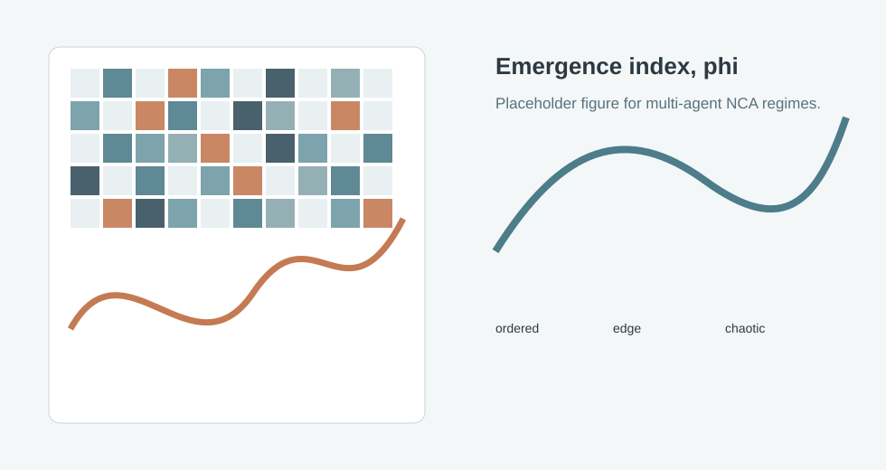

The Neural Biome project page has moved to the full interactive research article.

If you are not redirected automatically, open the Neural Biome article.
Placeholder figure. Replace with real frames from the simulation and a caption describing the observed regime transition.